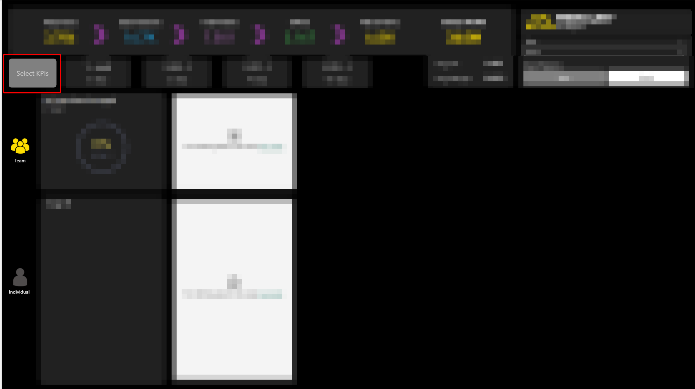
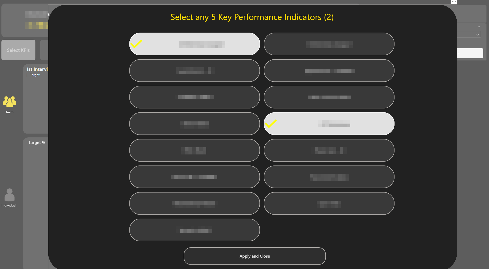
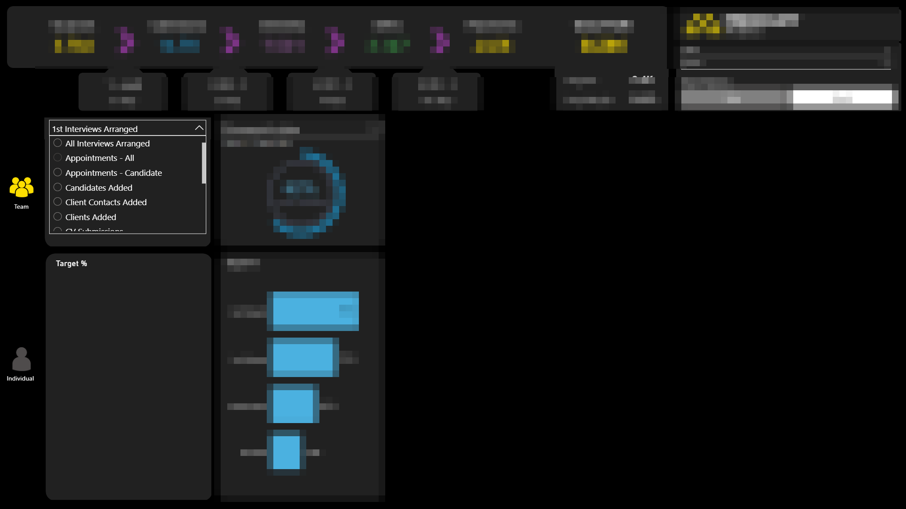
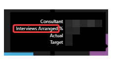
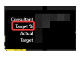
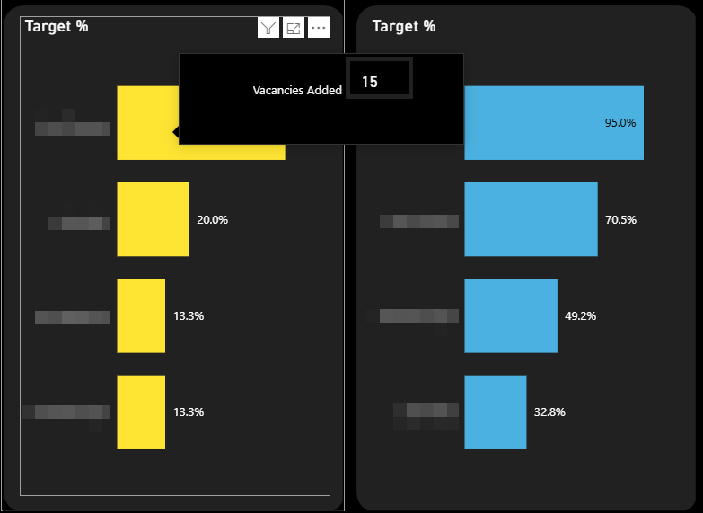
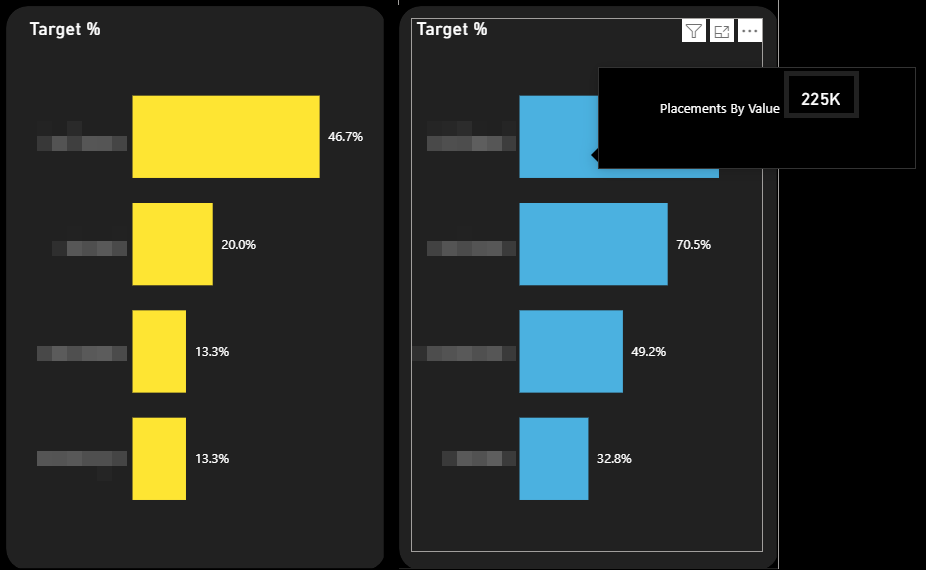

Context
We had a report in our suite which displayed 5 KPIs to the user. It was meant for a manager audience and designed so a manager could select an employee and see how that employee is doing against targets for a specific list of 5 metrics.
A request came from Product asking if it was possible for the user to be able to choose the KPIs they wished to view. So rather than viewing the same 5 each time, could they make their own selections?
We have a report which is for the employee audience which already has this capability via a vertical list of options however there is not enough real estate available in the manager's report to use this approach.
Background
We are looking at making the Target report more interactive. In particular we want to give the user the opportunity to choose their own KPIs rather than only viewing the five currently hardcoded.
The task was to develop a PoC for two options:
- a) Button to trigger popup / overlay menu where user can select KPIs.
- b) Changing the current title of each dial visual to be a dropdown of available KPIs.
Out Of Scope
The method used involved adding a new table to the model. This would mean the model changes from DQ to Mixed. However, as the model is due to change to the Import model, obtaining a solution while maintaining a DQ model was not considered.(Having said that, if we were to go ahead with this approach, moving the new table to SQL would mean the DQ model could be retained.)
This was not a design piece and so the finished PoC is not perfect from a design point of view. It was more about solving the functional problem.
Investigation
Unfortunately it was not possible to lift and shift the logic directly from the employee-audience report. One major reason is that the Managers report includes an additional slicer where the user can select the timeframe (Day, Weekly, Monthly) for the Targets.
The current code does not consider this extra slicer context and so the existing measures would not work correctly in the new report.
This means that when we come to development, we will need to add a number of new measures to the model.
Outcome
An example of how it might work with a pop up menu is included in the screenshots below:


The same idea but this time with a dropdown is shown in the below screenshot. Each visual pair would have a dropdown slicer from where the user could select the KPI they wish to view:

Methodology
As mentioned this was therefore done in a different way to the existing employee-audience Target report.
A disconnected table was added to the model. A one column table which contains all the possible options for Key Performance Indicator. This table had no relationships to the fact tables and acted purely as a user selection layer.
This column was then used as the source for both the pop up selector buttons and the drop down menus. Whatever was selected from this column would then be captured in a measure and used in various SWITCH statements to get metrics such as:
- The actual value.
- The target value.
- The % of target value.
- The title and subtitle text required, depending on selection context.
In the dropdown solution, you also need to disable interactions between the sets of visuals so the dropdowns do not influence each other and therefore filter one another. This ensures that each dropdown still contains all possible KPIs.
Final Thoughts
One thing we do lose out on is the tooltip on the bar chart. Currently when you hover over you get the following information:

where the KPI in question appears on the tooltip.
Unfortunately, this can't be replicated in the pop up method. This is because of the dynamic nature of the selection made. We can make it more general such as the following:

and leave it to the rest of the page to provide the context.
To try and accommodate this I did have a quick play with developing a custom tooltip where we replicate what we have currently. This is possible in the drop down method because every visual uses the same measure for the KPI Name ('First KPI Name (Managers)').
We can add this to our custom tooltip and then when we hover over a visual the context of the visual will provide us the correct name along the lines of this:


However this can't be implemented in the pop up method because each bar chart uses a different measure and there is no way you can obtain the context when you hover over a given visual i.e. whether you're looking at the first or second chart. If we were to go forward with this method we would have to go with a generic tooltip as per the first example above.
Conclusion
In terms of overall general development the dropdown method is slightly easier to implement. The one drawback is there is no ability to remove the border on the dropdown menu item. It feels to me a little overpowering visually.
The pop up method is more visually striking and is not too complex to implement.
As an aside, I wonder if there is any scope in investigating performance on this report. As we know, one of the main reasons for the latency is the Direct Query model. However there are also a lot of visuals that are rendered on the page and some of the latency will be wait time as Power BI can only render so many at once.
One possible solution is to edit interactions between certain visuals. For example the Target Frequency selection has no bearing on the headline metrics but currently every change the user makes to this selection results in the headline metrics being re-calculated and re-rendered thereby slowing rendering time for the report as a whole.
Another potential optimisation is the fact that the headline metrics are each on their own cards. With the new card visual we are able to add more than one metric per card. This could potentially lead to fewer cards in the report and thereby reduce re-loading time.
What Happened Next?
The team chose the dropdown option and the slicers were successfully implemented. It was felt inefficient to make the user go via an overlay menu to select the KPIs they wish when they could stay on the page and use dropdowns instead.